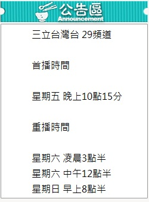

美麗的宜蘭，美麗的陽光農園，住著美麗的三代女人。
秋鑾、含笑、心慧，她們溫柔堅強，任何的逆境也能牽手走過。
秋鑾可以不去在意丈夫多年棄家留在小三身旁，含笑可以成全深愛男人的孝心，默默放手離去，心慧有了阿嬤和母親的愛，單親的人生空缺不算什麼…
四十歲生日那天開始...含笑辭去了做了十幾年的房仲工作即將展開人生新的一頁…
那一天，她與當年無緣的心上人重逢，棄家多年的父親貴德失智回到小鎮，
女兒心慧對怪脾氣的天才廚師一見鍾情…從此以後一切都再也不一樣，母親的委屈、自己的承擔、女兒的感情波濤
將驅使她直接面對女人和女人之間，彼此在不同角色上的另一種心情與態度…
面對母親的反對，含笑改造父母親經營的老餐廳，並讓它重新開張「含笑食堂」除了販賣美味，也希望透過食物的味道，將父親的記憶找回來…在老天近乎捉弄的安排下， 種種逆境，看似委屈，走下去才知，一切都是最好的安排…
第三集 ( 因第一、二集無嵌入)